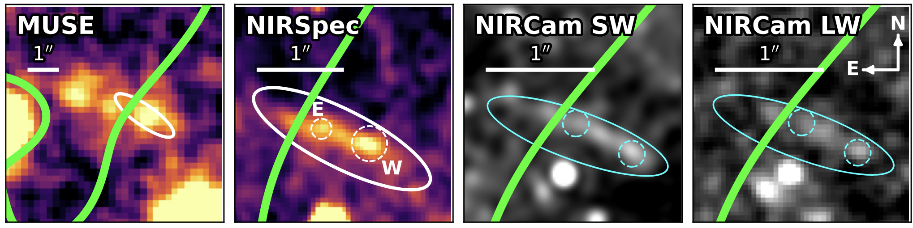
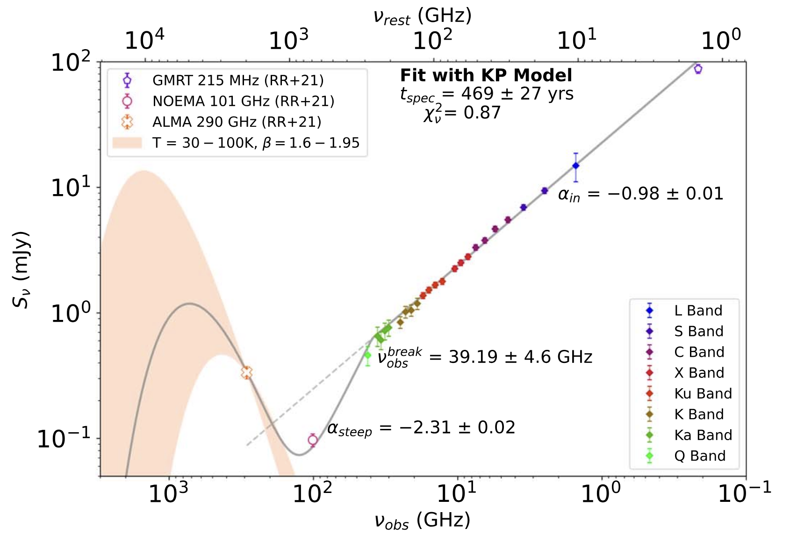
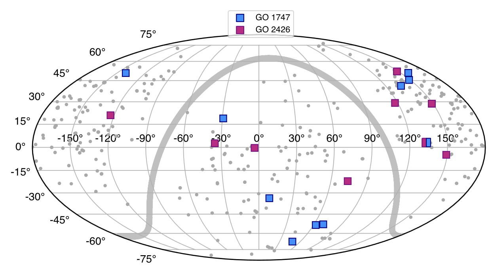
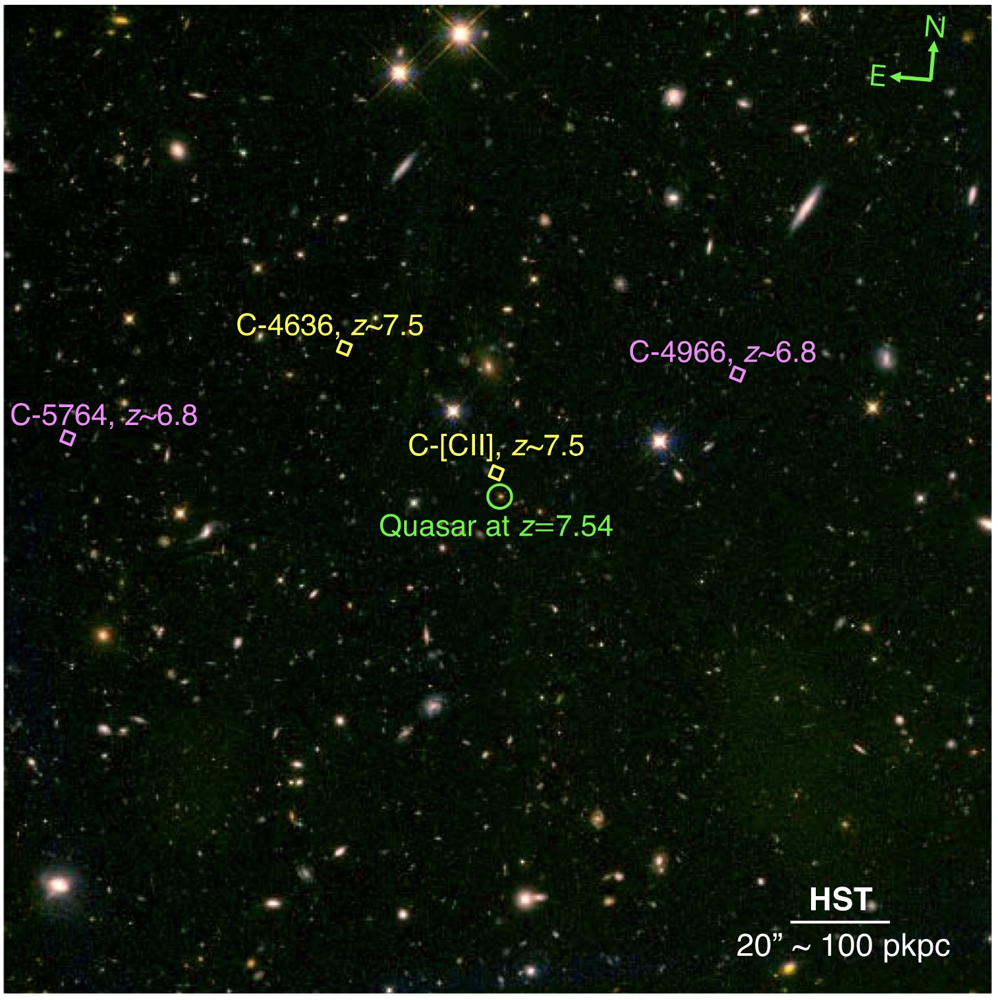
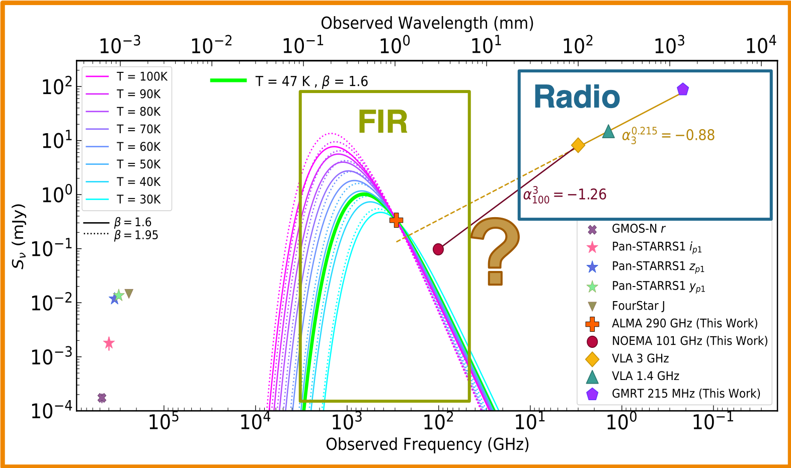
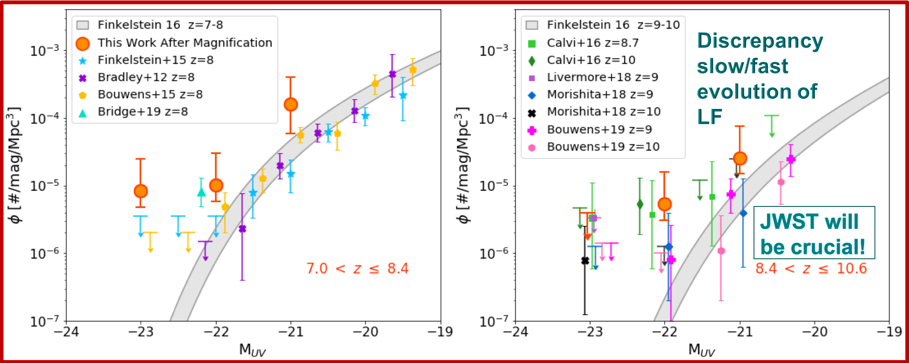

Galaxies and Supermassive Black Holes in the Epoch of Reionization
My field of expertise is the Epoch of Reionization (EoR), that is, the period when the Universe emerged from total darkness. This process occurred at some point in the first billion years of the Universe (or at high redshifts z ≳ 6) when the first-born galaxies became powerful enough to ionize the neutral hydrogen gas filling the Universe. Among all the amazing things you can study about the EoR, I have been focusing on studying some ionizing sources such as massive bright galaxies and quasars, which are galaxies hosting active supermassive black holes in their nuclei.
Publications
Papers I led or majorly contributed to, newest first.

Chasing Cosmic Reionization: An Extremely Faint, Highly Magnified Source at z = 5.66 with High ξion
Meet SALSA: a tiny, extremely faint galaxy that is very efficient at producing ionizing photons. It is only detectable thanks to gravitational lensing by the galaxy cluster A2744.
Validated the RegalJumper data reduction pipeline for JWST/NIRSpec IFU spectroscopy on an extremely faint source, combined it with VLT/MUSE spectroscopy and NIRCam imaging to resolve the source into two clumps, corrected for lensing magnification, and measured their ionizing-photon production efficiency and metallicity.
Read the paper
The BoRG-JWST Survey: Analogs at z ∼ 8 to the UV-luminous Galaxy Population at z > 10
BoRG-JWST galaxies at z ∼ 8 share many traits with the surprisingly luminous galaxies JWST is finding at z > 10, also known as “Blue Monsters”, so they can be used as closer, easier-to-study analogs. Their star-formation histories split them into “Blue Zombies”, which built most of their mass early, and “Recent Blue Monsters”, which formed it all in the last ∼140 Myr.
Bootstrapped emission-line fits for 14 confirmed galaxies; an AGN-versus-star-formation line-ratio diagnostic, limited by the low S/N and resolution of the spectra; non-parametric star-formation histories strongly preferred over simple models (ΔBIC ≈ 400–7000); and an Anderson–Darling k-sample test (scipy), suited to small samples of seven galaxies per group, showing two distinct stellar-mass assembly histories (p = 0.004).
Read the paper
The BoRG-JWST Survey: Abundance and Mass-to-light Ratio of Luminous z = 7–9 Galaxies from Independent Sight Lines with NIRSpec
How common are the brightest galaxies in the first 800 million years? Using many independent patches of sky, we measure their abundance and how much stellar mass hides behind their light.
A Bayesian estimator (MCMC with emcee and a Poisson likelihood) for the abundance of 11 confirmed galaxies across 8 independent fields, propagating per-source uncertainties through 1,000 draws each, and Bayesian linear regression for a near-linear scaling relation (slope 0.85 ± 0.12, intrinsic scatter 0.45 dex).
Read the paper
First Measurements of Black Hole Accretion and Radio-jet Timescales in a Young Quasar at the Edge of Reionization
For the first time, we estimate how long a quasar's black hole has been growing and how old its radio jet is, in the quasar P352–15 at z ≈ 6.
Two competing 5-parameter physical models fit (χ2 minimization) to 25 multi-observatory measurements, both with reduced χ2 < 1, plus a PCA model trained on 4,579 spectra to reconstruct the Lyα emission, giving consistent estimates for the age of the quasar and the jet.
Read the paper
The BoRG-JWST Survey: Program Overview and First Confirmations of Luminous Reionization-Era Galaxies from Pure-Parallel Observations
The BoRG-JWST program follows up bright galaxy candidates found in Hubble pure-parallel fields with JWST spectroscopy. This paper presents the survey and its first confirmed galaxies in the Epoch of Reionization.
NIRSpec prism spectroscopy of candidates selected from HST pure-parallel imaging, with spectroscopic redshifts compared against photometric predictions.
Read the paper
Exploring the Mpc Environment of the Quasar ULAS J1342+0928 at z = 7.54
Do the earliest quasars live in crowded neighborhoods? We search for galaxies around one of the most distant known quasars to map its megaparsec-scale environment.
Selection of companion galaxy candidates around the quasar and statistical comparison with blank-field number counts.
Read the paper
Bright z ∼ 9 Galaxies in Parallel: The Bright End of the Rest-UV Luminosity Function from HST Parallel Programs
By combining several Hubble parallel programs, we find bright galaxy candidates at z ∼ 9 and measure how common the brightest early galaxies are.
Candidate selection across many independent HST parallel fields and luminosity function fitting.
Read the paper
The Impact of Powerful Jets on the Far-infrared Emission of an Extreme Radio Quasar at z ∼ 6
The radio jets of P352–15 are so powerful that their emission contributes even at millimeter wavelengths, where we usually only see cold dust from the host galaxy.
Python integration of data from multiple observatories, from X-rays to radio, and SED modeling to separate synchrotron emission from dust emission.
Read the paper
Probing the Bright End of the Rest-frame Ultraviolet Luminosity Function at z = 8–10 with Hubble Pure-parallel Imaging
We searched for bright galaxies in the first 500 million years using the Hubble BoRG survey and found 11 candidates at z > 7, used to measure the bright end of the luminosity function.
A Python galaxy-selection pipeline (Source Extractor, EAZY) over 90 independent HST fields; a DecisionTreeClassifier trained on hand-labeled data cut candidates from 579 to 82 (86% less manual vetting); and 1.8 million injection–recovery simulations to quantify selection bias.
Read the paperTalks
Watch this talk I gave at the Hypatia Colloquium showing the results of my work on the SED of P352-15 in the millimeter and radio wavelengths.